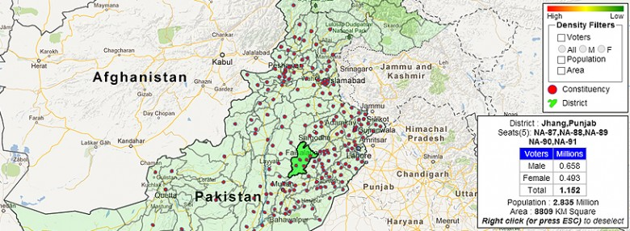
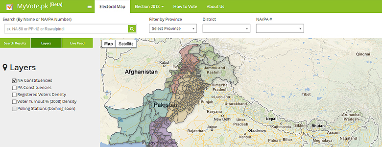

Pakistan’s Elections Information Portals
Since Pakistan’s next general elections are just few weeks away now, there has been an incredible use of technology in different and innovative forms. I see this as a revolution towards making much more information and data available for public than ever before. By far, most of these applications are providing a detailed overview of information, either in reports format or as overlayed on maps. Following is an example taken from VoterMaps and there is a list of many more resources at end of this article.
So all the sudden, this list started increasing rapidly and I started to think that what it is that is making everyone develop their own system while using somewhat similar data and information. This is kind of duplicating a resource for no further end users benefits. Being a developer I acknowledge that it is waste of resources to duplicate things as it complicates things at various levels for end users. After going through few of these available resources, I noticed that almost all of them have some difference to each other. The difference was found:
- in various type of areas mapped i.e. constituencies, districts etc.
- variable and outdated information
- lack of usability and accessibility
De facto that every such person who is aware enough to use the internet and maps can instead go to Election Commission of Pakistan (ECP) website and get all this information from there that is in fact more up-to-date, accurate and official. Well, in that we of course do not need these all portals in first place. However, this is not what I am encouraging for. We definitely need many more initiatives. These all initiatives bring brilliants brains together with their different methods and approaches of tackling a problem or finding better solutions.
Anyhow, the focus of discussion is the source and amount of data in these portals that is actually generating the unseen limitations.
Basically, the data and information in these portals is enormously limited to whatever is available from few sources i.e. ECP etc. Availability of more official data and information is imminent to make these portals further rich and useful. The limited data and information in these portals resulting in:
» making these portals limited to available official data and information only. » no contributions to these portals by users. » limiting developers so they can contribute to these systems.
Perhaps, these are major reasons that are making most developers come with improvements but because they either do not want or cannot contribute to existing systems, they rather find it easier to develop their own solution with somewhat similar system—with an extra feature or bit more precise information. Following screenshot is from MyVote.pk, one of the portals currently offering constituencies maps based on ECP’s official maps.
This practice is not feasible in long term even though use of these systems is seasonal. This practice is also confusing the users at some point as they are unable to make their mind to actually use these systems or just give them a visit to praise them and never return back.
Therefore, suggestions are to make these systems public and remove proprietary limitations. Let others contribute and make these systems more useful and helpful for everyone in long term. Open the source code for developers to extend the functionalities. This will increase trust by users and they will be able to make their mind to use a standard and uniform system than being divided into different options.
I will leave this to developers that how they make these systems much more useful to users and open doors for extended developments.
NB: The discussion in this study varies for each case.
Elections Information Resources [Updated: 09/05/2013]
- Election Commission of Pakistan
- 2008 Election results map – BBC Urdu
- Vote – Chalo.pk
- Pakistan Elections 2013 – Android Application/a>
- Interactive Portal – PakVotes.com
- Election Rigging Surveillance – JaagPakistan.pk
- Free and Fair Election Network (FAFEN)
- Mobilink Elections – Android Application
- Where is my ballot? (KPK & Punjab atm.)
- Video: How to cast vote? (Urdu)
- Video: How to vote through postal ballot? (Urdu)
- Punjab Elections Monitoring – Android Application
- Constituencies Maps & Information – MyVote.pk
- Code of conduct violation
- Voter Maps
- uElect Pakistan
- Google Politics & Elections
- Dawn Pakistan Elections 2013
- Pak Elections
- LokPunjab Elections Information Hub
- Article: Express Tribune: The hunt for Karachi’s constituency map